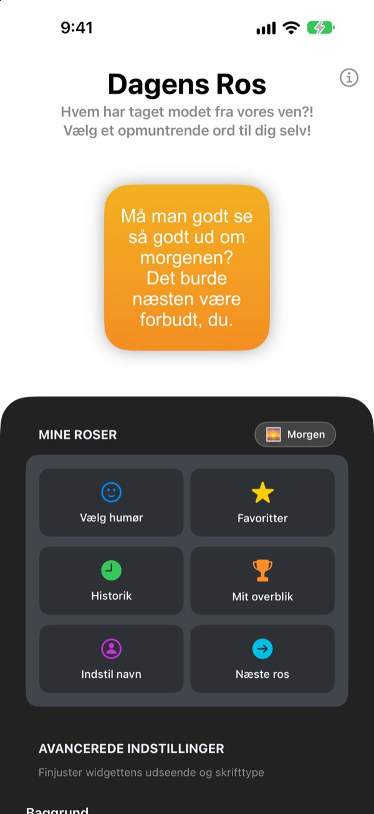
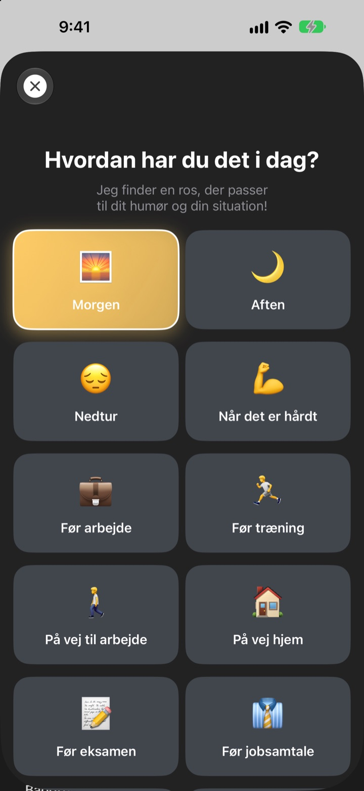
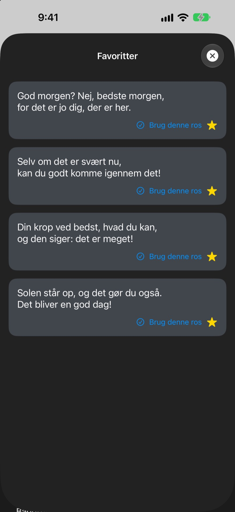
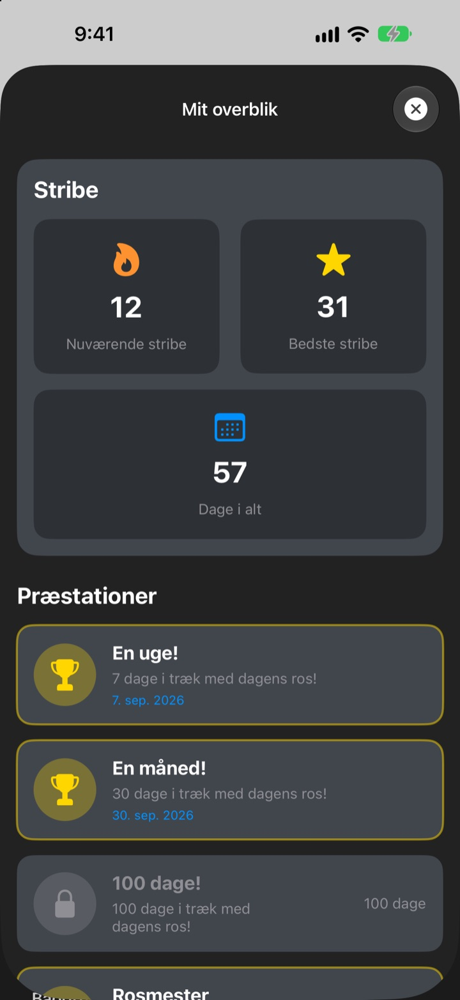

Hver gang du tager telefonen,
venter din største fan
Dagens Ros er en widget, der med vilje roser dig alt for meget. Morgenros om morgenen, jobsamtale-ros før jobsamtalen. Skrifttype, farver og baggrund vælger du selv.
Ét køb, og du har det hele. Intet abonnement, ingen reklamer.

Få en portion ros nu
Vælg et humør, så viser widgetten den ros, der passer. Tryk på Næste ros for en tilfældig blandt alle 281.
Hvem er din hårdeste kritiker? Er det dig selv?
På vej til arbejde, før jobsamtalen, på vej hjem: Stemmen i hovedet brokker sig mest. Dagens Ros tager dit parti fra hjemmeskærmen flere gange om dagen, og lidt mere end rimeligt. I det øjeblik du trækker på smilebåndet, kommer lidt af selvtilliden tilbage.
Ros, der passer til humøret
Vælg mellem 14 humør og situationer som Morgen, På vej til arbejde, Når det er hårdt, Før jobsamtale eller Før date, så lander den rette ros straks på din widget. Kan du ikke vælge? Der er også Tilfældig.

Gem dem, du holder af
Tryk på stjernen for at gemme rosen i Favoritter, og bladr tilbage i Historik. Tryk på Brug denne ros, så ryger den direkte på widgetten.

Kig forbi hver dag, og se det vokse
Hver dag du kigger ind, forlænger din stribe. Ved 7, 30 eller 100 dage i træk og ved 50 og 100 dage i alt låser du en præstation op.

Kom i gang på tre trin
- 1
Vælg humør
Åbn
Vælg humør, og tryk på det, der passer lige nu. - 2
Tilpas widgetten
Vælg skrifttype, tekstfarve, baggrund og opdateringsinterval i Avancerede indstillinger.
- 3
Læg den på hjemmeskærmen
Hold fingeren på hjemmeskærmen, tryk på +, og find Dagens Ros.
Sådan gør du widgetten til din
- Skrifttype
- 13 muligheder, bl.a. Futura, Georgia og Marker Felt
- Tekstfarve
- Lige den farve, du kan lide
- Baggrund
- Et farveforløb i to farver eller et af de indbyggede billeder
- Justering
- Venstre, midt eller højre
- Linjeafstand
- Tættere eller luftigere linjer
- Opdateringsinterval
- Ny ros hvert 5., 15. eller 30. minut
Widgettens størrelse vælger du, når du føjer den til hjemmeskærmen.
Køb den én gang, så er det klaret
Appen
- 281 roser til 14 humør
- En hjemmeskærmswidget i din stil
- Favoritter og Historik
- Striber og præstationer
Støt udvikleren
- Vælg en lille, mellem eller stor drikkepenge
- Det låser ikke noget op. Det er bare en måde at sige tak på
Kun hvis og når du har lyst.
Intet abonnement, ingen ekstra køb, ingen reklamer.
Ofte stillede spørgsmål
Hvordan tilføjer jeg widgetten?
Hold fingeren på et tomt sted på hjemmeskærmen, til symbolerne vrikker, tryk på + øverst, søg efter Dagens Ros, og vælg en størrelse.
Hvordan vælges den næste ros?
Når du vælger et humør, kommer en ros til det straks på widgetten. Derefter viser widgetten en tilfældig blandt alle 281 i det interval, du har valgt. I appen kan du også trykke på Næste ros for selv at skifte.
Kan jeg ændre skrifttype eller opdateringsinterval?
Ja. I Avancerede indstillinger ændrer du skrifttype, tekstfarve, baggrund, justering, linjeafstand og opdateringsinterval: 5, 15 eller 30 minutter.
Widgetten skiftede ikke med det samme.
Det er iOS, der bestemmer, hvornår widgets tegnes igen, så den kan halte lidt efter det valgte interval. Åbn appen og luk den igen, så opdateres widgetten.
Hvordan virker striben?
Hver dag i træk, hvor du ser en ros, lægger en dag til striben. Under Mit overblik ser du din aktuelle stribe, din rekord, antal dage i alt og dine præstationer.
Mine favoritter og min historik er væk.
Alt gemmes kun på din enhed og følger derfor ikke med, hvis du sletter appen eller skifter telefon. Har du ikke slettet noget, og er det alligevel væk, så send os en mail.
Bliver mine data sendt nogen steder hen?
Nej. Appen indsamler ingen personoplysninger. Dine favoritter og din historik bliver på din enhed.
Hvordan melder jeg en fejl eller foreslår noget?
Direkte via Kontakt udvikleren i appen, på mail eller i en DM på Instagram til @lee25_ios. Vi svarer, så snart vi har set det.
Spørgsmål eller idéer? Skriv til leeo@kakao.com.